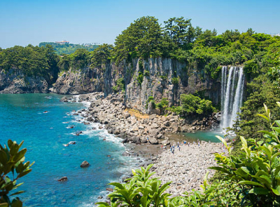
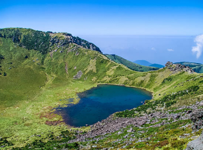
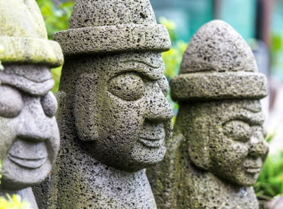
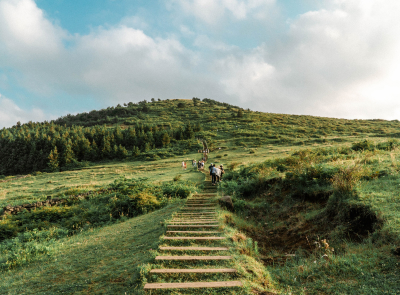
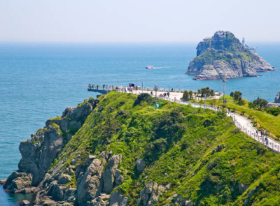

추천 관광명소
한국 관광공사 선정 '꼭 가봐야 할 관광명소 100선' 관광지를 소개합니다.
전국 8도의 숨겨진 명소를 확인해보세요!
제주폭포
우도는 제주에 있는 섬 안의 섬이에요. 서귀포
성산항에서 15분 정도 배를 타고 들어가는 곳이
죠. 우도는 제주도와 마찬가지로 용암지대 특유
의 지형을 갖고 있고 우도팔경이라 불리는 아름
다운 자연경관을 자랑하는 곳이에요. 자전거나
스쿠터를 대여해 섬을 천천히 일주해 보세요. 봄
철에는 유채꽃 만발한 우도를 여름밤에는 우도
앞바다 어선들의 조명과 바다가 어우러진 멋진
야경을 볼 수 있어요. 섬 곳곳에서 제주 특유의
이국적 풍경과 예쁜 카페를 만날 수 있어 사진을
찍어 추억으로 남기기에 좋아요. 성산 일출봉
가까우니 함께 둘러보세요.

이런 곳도 있어요
-

한라산 백록담 -
천지연폭포
-

돌하르방마을 -

제주애월오름 -

제주해안도로